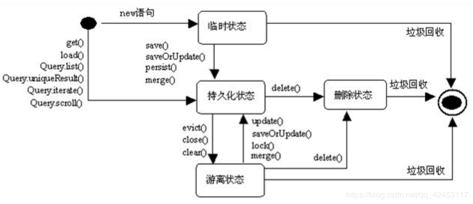
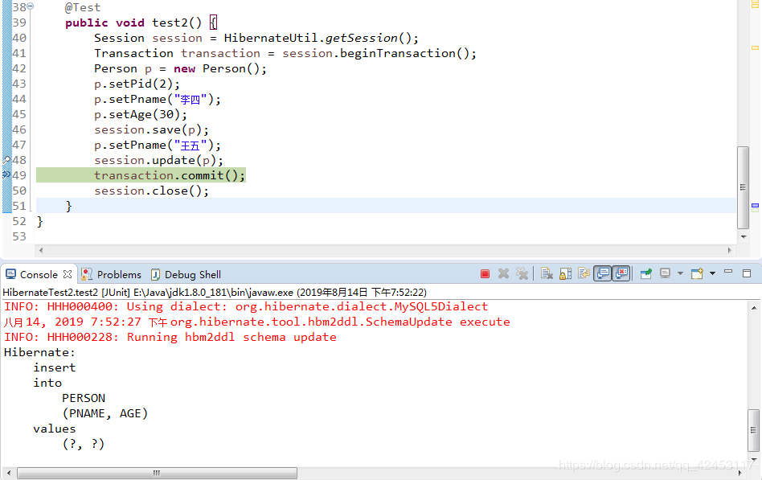

在Hibernate框架中，为了管理持久化类，Hibernate将其分为了三个状态：
有很多人好像对这些概念和它们之间的转换不太明白，那么本篇文章就是来解决这些问题的，看完了还不会你来找我。(开个玩笑~~)
我们先来详细地了解一下三种状态：
对象由new操作符创建，且尚未与Hibernate中的Session关联的对象被认为处于瞬时态。瞬时态对象不会被持久化到数据库中，也不会赋予持久化标识，如果程序中失去了瞬时态对象的引用，瞬时态对象将被垃圾回收机制销毁。
持久化实例在数据库中有对应的记录，并拥有一个持久化标识。持久化的实例可以是刚刚保存的，也可以是刚刚被加载的。无论哪一种，持久化对象都必须与指定的Session对象关联。
某个实例曾经处于持久化状态，但随着与之关联的Session被关闭，该对象就变成脱管状态。脱管状态的引用引用依然有效，对象可继续被修改。如果重新让脱管对象与某个Session关联，该脱管对象会重新转换为持久化状态。
| 瞬时态 | 持久态 | 脱管态 | |
| 是否存于Session缓存中 | × | √ | × |
| 数据库中是否有对应记录 | × | √ | √ |
例如：
public class HibernateTest {
private Session session;
private Transaction transaction;
@Before
public void before() {
session = HibernateUtil.getSession();
transaction = session.beginTransaction();
}
@After
public void after() {
transaction.commit();
session.close();
}
@Test
public void test() {
Person p = new Person();
p.setPname("张三");
p.setAge(20);
session.save(p);
}
}那么在这样的一个例子中，从创建Person对象到给name和age属性赋值，这些过程都处于瞬时态，而当调用了session对象的save()方法之后，该对象才从瞬时态转为了持久态。而当session关闭之后，该对象又从持久态转为了脱管态。
了解了三种对象状态的相关概念后，我们来看一看三种对象状态之间是如何神奇地相互转换的。
我们知道当创建一个对象之后，该对象即为瞬时态，那么它将如何转换为持久态呢？
看一个例子：
@Test
public void test() {
Person p = new Person();
p.setPid(2);
p.setPname("李四");
p.setAge(30);
session.save(p);
//session.saveOrUpdate(p);
}给name和age属性赋值时，该对象仍然处于瞬时态，这个前面已经说过了。但需要注意的是，当给主键也就是Pid属性赋值时，该对象将不再处于瞬时态，而是转换为脱管态，因为此时已经有了持久化标识，但是并没有与Session发生关联。而当调用session对象的update()或者saveOrUpdate()方法时，该对象才会转换为持久态。
当然，调用session对象的get()、load()、query、find()等方法从数据库中查询得到的对象也处于持久态。
而仅仅当session对象调用delete()方法将一个持久化的对象从数据库中删除后，该对象才从持久态转为了瞬时态。
当调用session对象的close()、clear()等方法后，该session所关联的对象将从持久态转为脱管态，此时这些对象失去了相关session的关联。而要想从脱管态转回持久态，只需调用save()、saveOrUpdate()等方法即可。
这个前面也已经说过了，当创建对象后调用setXXX()方法设置主键属性时，该对象就从瞬时态转为脱管态，前提是这个主键是数据库中存在的。

下面以一个对象从创建到保存至数据库的流程做一个分析：
try {
Session session = HibernateUtil.openSession();
//开始事务
session.beginTransaction();
//person对象进入瞬时状态态
Person p = new Person();
p.setPname("王五");
p.setAge(40);
//person对象进入持久化状态
session.save(p);
//提交事务，隐式包含了session.flush()的动作
session.getTransaction().commit();
//提交完成后，person处于游离状态
} catch (HibernateException e) {
e.printStackTrace();
if (session != null)
session.getTransaction().rollback();
} finally {
if (session != null)
session.close();
}当一个对象被实例化后，该对象是瞬时状态，当调用session.save(Object)后，该对象被加入到session缓存中，进入持久化状态，这时数据库中还不存在对应的记录。当session提交事务后，数据库生成了对应的记录，但是这里需要注意一点，因为事务提交的时候默认会去调用session.flush()方法来清空缓存，相当于调用了clear()方法，而我们知道，调用了clear()方法，对象会从持久态转为脱管态。而处于脱管态的对象会被垃圾回收机制销毁。这就是一个对象从创建到保存至数据库的完整生命周期过程。
对于对象状态有了一定的了解之后，可以用来解释很多现象。
在Hibernate中，唯有当对象从其它状态转为持久态时，它才会去自动生成sql语句，其它时候是不会去重复生成sql，这就是Hibernate框架提高效率的关键所在。
例如：
@Test
public void test2() {
Session session = HibernateUtil.getSession();
Transaction transaction = session.beginTransaction();
Person p = new Person();
p.setPname("李四");
p.setAge(30);
session.save(p);
p.setPname("王五");
session.update(p);
transaction.commit();
session.close();
}我在transaction.commit();这条语句上打了一个断电，然后调试运行。

可以看到，控制台只输出了一条sql语句，也就是执行save()方法时生成的插入语句，但是执行update()方法却并没有生成sql。这是因为在执行update()方法时，Hibernate框架会去判断当前对象的状态，它发现当前对象处于持久态，所以不重复生成sql，只是将持久态对象的值改变而已，然后调用commit()方法进行事务提交的时候才去生成更新语句。
我们继续看一个例子：
@Test
public void test2() {
Session session = HibernateUtil.getSession();
Transaction transaction = session.beginTransaction();
Person p = new Person();
p.setPname("张三");
p.setAge(30);
session.save(p);//此时该对象从瞬时态转为持久态，生成sql语句
p.setPname("王五");
session.save(p);//此时该对象为持久态，不生成sql语句
p.setPname("赵六");
session.update(p);//此时该对象为持久态，不生成sql语句
transaction.commit();
session.close();
}你要知道，这跟你调用哪个方法是无关的，关键在于对象的状态，只有转为持久态时才会生成sql语句。所以上面的程序段依然只会产生两条sql，一条是save()方法产生的，一条是commit()方法产生的。
控制台信息如下：
Hibernate:
insert
into
PERSON
(PNAME, AGE)
values
(?, ?)
Hibernate:
update
PERSON
set
PNAME=?,
AGE=?
where
PID=?理解Hibernate的三种状态，将更有利于理解Hibernate的运行机制，这些可以让你在开发中对疑点问题的定位产生关键性的帮助。